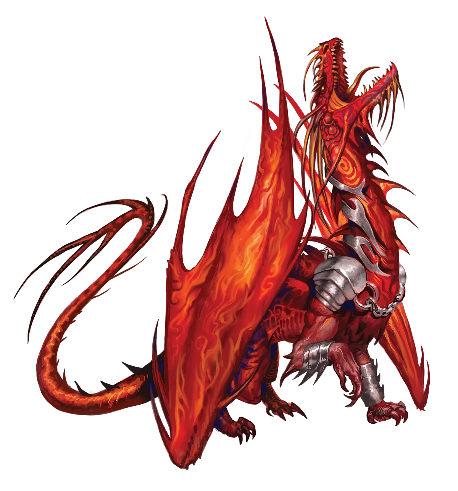
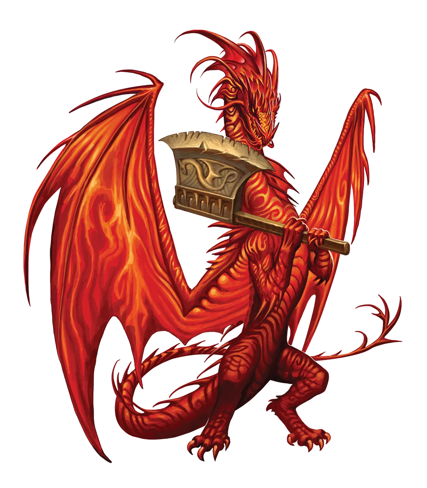

炽天神侍之力
你可能会想，基于它们无与伦比的傲慢，炽天神侍必定比其他任何龙类都更强大，才能维持那种令人难以忍受的程度。但奇怪的是，它们并非如此。它们甚至在外层龙类家族中并列最弱。不，它们真正的最大力量并非实际力量；而是其傲慢在面对一切事实和严酷现实时的纯粹坚持。这听起来像我在嘲笑它们，确实如此，但其中也有一些真实的东西。
日曜龙 Solar Dragon |
|
|
那些相信星界、红或至高的龙类必定是所有龙类中最傲慢的人，从未见过炽天神侍的龙类。炽天神侍视自己为宇宙浩瀚中所有光明的源泉。因此，所有生灵，包括其他血统的龙类，最终都是它们的造物。这种观点――与宇宙中几乎所有其他生物的看法相悖――往往引来其他龙类带着好笑意味的叹息。尽管也许不会当着炽天神侍的面如此。 毫不意外，炽天神侍也相信它们的同类创造了永恒之光仪式。作为证据，它们指出，既然它们创造了所有生灵，那么创造一种也能转化其造物的仪式对它们而言只是小事一桩。它们还象征着光明，这占了仪式名字的一半！虽然日曜龙自视高于其他血统的龙类，但在与自己的同类打交道时，它们很少表现出同样的傲慢。毕竟，其他炽天神侍也是创造生命之血统的成员。特别是年长的炽天神侍，值得尊敬，因为它们离祖先更近。因此，炽天神侍之间出现了分裂，一派认为必须执行永恒之光仪式，另一派则坚信这样做会使炽天神侍脱离其原始且因此完美的形态。 披着难以撼动的傲慢之袍，两派炽天神侍都坚信自己是对的，而反对意见皆为胡言乱语。幸运的是，炽天神侍很少让意见分歧演变成暴力。也许矛盾的是，它们的救赎之处正是它们的傲慢，这使它们更倾向于一种沾沾自喜的优越感，而非渴望镇压异议者。毕竟，暴力是不安全感的表现，是自信外表之下的弱点。炽天神侍非常乐意让那些不同意它们的人继续前行，确信他们终将认识到自己的错误。 永恒炽天神侍面前有一项艰巨的任务，因为它们自己也承认，永恒之光仪式会暂时削弱它们那强大无比的力量。为了重获作为所有龙类中最伟大者的昔日地位，炽天神侍必须要么作为独行冒险者考验自己，要么找到一种在不承认自己虚弱状态下寻求协助的方法。幸运的是，炽天神侍在隐藏自身缺陷方面可以格外富有创意。它们可以编造各种理由来解释为何必须加入队伍，同时又不否认自己的伟大。一个常见的理由是，炽天神侍创造了所有生命，包括他们新同伴的生命，因此保护自己的杰作是龙类的职责。 它们强大的自我驱使许多炽天神侍投身以魅力为核心属性的职业，如吟游诗人、和术士。与凡人太阳神�o结盟的炽天神侍可能是牧师，而那些对造物术或星辰研究更感兴趣的往往是奇械师或法师。 炽天神侍之力 你可能会想，基于它们无与伦比的傲慢，炽天神侍必定比其他任何龙类都更强大，才能维持那种令人难以忍受的程度。但奇怪的是，它们并非如此。它们甚至在外层龙类家族中并列最弱。不，它们真正的最大力量并非实际力量；而是其傲慢在面对一切事实和严酷现实时的纯粹坚持。这听起来像我在嘲笑它们，确实如此，但其中也有一些真实的东西。 日曜龙特质 Solar Dragon Traits 你出身于一脉自视甚高、深信自己创造了世间万物的日曜龙世系。 |
  |